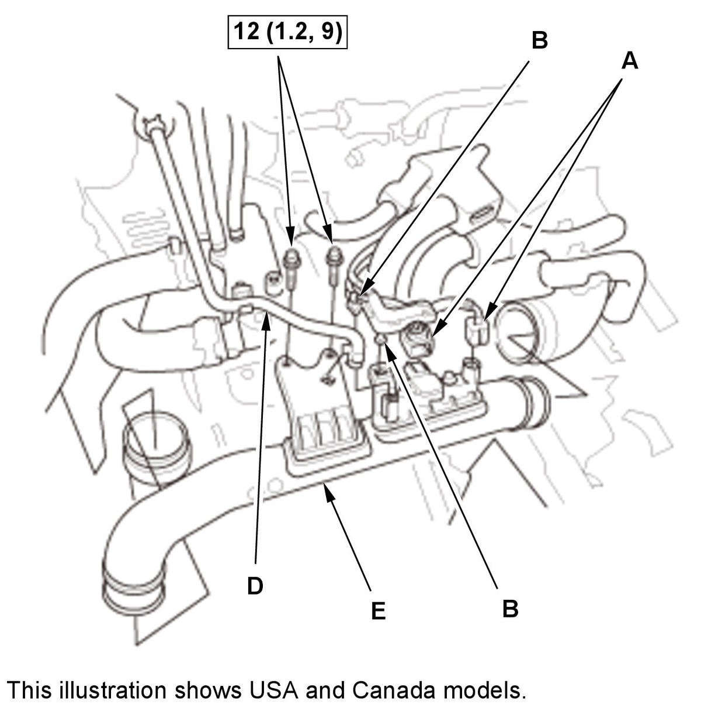
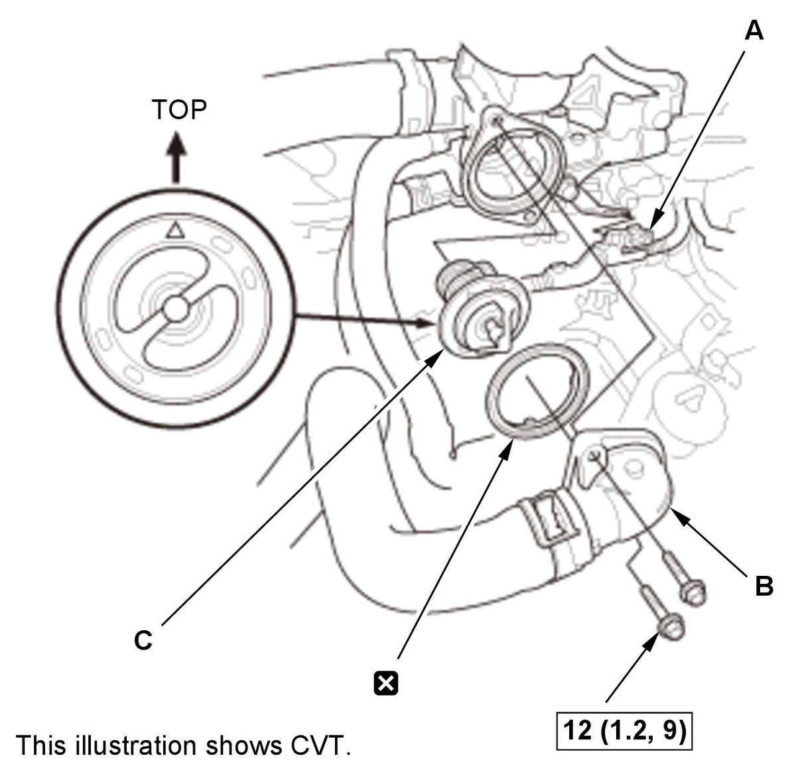

Removal and Installation
NOTE: How to read the torque specifications.
- Engine Coolant - Drain
- Air Cleaner - Remove
- Intake Air Duct E - Remove

Courtesy of HONDA, U.S.A., INC.1. Disconnect the connectors (A). 2. Remove the harness clamps (B).
3. USA and Canada models: Disconnect purge tube D.
4. Remove intake air duct E.
- Thermostat - Remove

Courtesy of HONDA, U.S.A., INC.1. CVT: Remove the harness clamp (A). 2. Remove the thermostat cover (B).
3. Remove the thermostat (C).
NOTE: Be sure to install the thermostat in the direction shown.
- All Removed Parts - Install
1. Install the parts in the reverse order of removal.